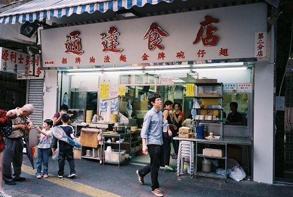
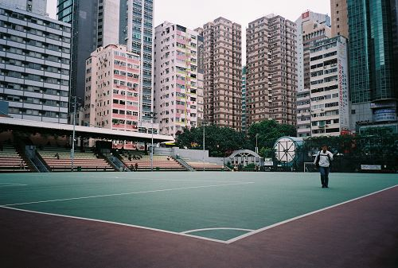
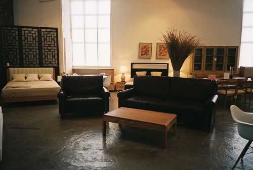
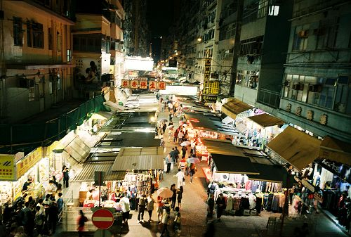
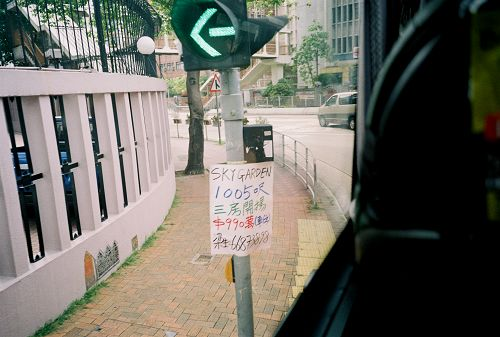
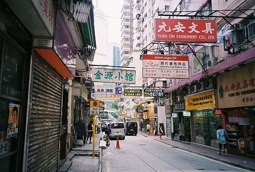
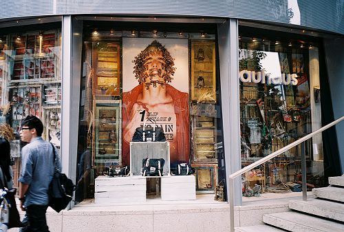

香港尖沙咀广东道人山人海，夜晚的旺角、油麻地同样人山人海，不过不同的是前者内地游客多，后者当地人多。有朋友说爱香港的油麻地、庙街，那儿可以感受到地道的香港氛围，还有当地平民美食品种花样繁多。说到旺角，马上会想起张家辉在《旺角监狱》的片尾跪在清晨街头的场景。去旺角只为尝一尝“通达食店”的招牌小吃，它在油麻地地铁站A2出口一出来便是，而且同一招牌，左右隔壁各开了一家。第一次去是晚上，店里很难找到空座位，有顾客直接打包，或边走边吃，劲辣鱼丸值得一试。我对它家的肠粉也有好感，无止境地嫩滑感，根据自己需要搭配各种调料。第二天快中午了又赶去品尝它的金牌碗仔翅，超喜欢。

维多利亚公园旁有这样的体育场，建在住宅附近，夜晚灯火通明，打篮球、踢足球、跑步、溜旱冰的市民很多，遂对它产生了好奇心。乘车时发现象这样建在住宅区附近的体育场不算少，无知的我想象这是不是香港政府专为市民健身锻炼而建设的？

香港街头大众的GOLF和GTI挺多，BMW1系见到两三辆，3系、5系轿车没见到，Volvo XC60、XC90见到各一辆，在兰桂枋小街边看到一位50岁左右的先生坐在大红色的XC90里面等人，被这样的组合小小地震惊了。香港街头的车不象内地这么多元化，在北美销售很好的CAMRY ，内地前些年趋之若骛的雅阁都没见到。貌似要么豪车跑车，要么保姆车出租车，剩余的小份额被少量杂款车型占据。

第一次去鸭梨洲的新海怡广场，本打算去占点儿折扣品的便宜，结果只相中了条裤子。倒是大厦内的家具店更家吸引我。

大厦边上就是家法拉利4S店，二十几辆法拉利跑车同时出现，能不壮观啊？

大厦的停车场，在这里可以乘免费巴士去海怡商场的Space Warehouse，说实话，也没什么看头。去过一次就好了。

太子是九龙的传统住宅区域，被视为旺角的延伸部分。区内有金鱼街，雀仔街，花墟等特色街道。这是从人行天桥上拍摄的。

这次大餐里最想推荐的是中环云咸街43-55号的餐厅“云府”，外面是酒吧，里面是餐厅，各不影响。老板是英国人和新加坡人，但是从餐厅内的设计装修、背景音乐到菜肴的烹饪、口味都会让人以为老板是大陆去的，因为它太民族风了。小羊腿用类似蒙古的木质大钵子端上来，硕大一只。它家的醉香花蛤、大红袍干辣椒同炒的虾球还有红花片片（很辣的鱼哦）非常不错。服务员轻声细语的服务，菜品精致，环境优雅，会给你一种“吃饭，可不是小事情”的感受。遗憾的是我带的胶片机无法清楚记录下店内的环境。不过可以上它们的网站 http://www.yunfu.com.hk/看一看，即使不吃饭，单单在餐厅里赏景，感受氛围也值得消费。

1005尺（平方英尺？）/HKD990万....

金源小馆（湾仔大王东街3-5号），20年历史的街坊小菜馆，外表毫不起眼，却是本地饮食杂志和食评网站的强力推荐。跑去湾仔只为品尝店里的手工榴莲冰淇淋。没记错的话，才10元港币啊。金枕头榴莲ICE CREAM每天手工新鲜制作，不添加糖和香精，真材实料，由于必须要冷藏一天才能凝固，当天如果售磬，就得等到明天再去买了。


9 Responses to “@Hong Kong”
2011-10-13
围脖地址给我？可以发我gmail邮箱
2011-10-13
我已经添加你了，呵呵。
2011-10-13
胶片。好看！用的什么胶卷。
2011-10-14
胶卷拍香港的市井照很好看的～
2011-10-14
家具店的东西很简洁。
2011-10-14
这几天很想去HK，看你已经捷足先登了~~有点小灵犀呢~~~
2011-10-15
97年在国内读研的时候去香港开会，第一次出国，那时去香港还要去英国大使馆办签证， 颇费周折， 去了之后才发现差距，就下决心一定出国。
2011-10-21
想不到你也会去棚户区体会一下民风~
2012-04-19
还是要去看看。。
Leave A Reply
存档只读，评论已关闭。